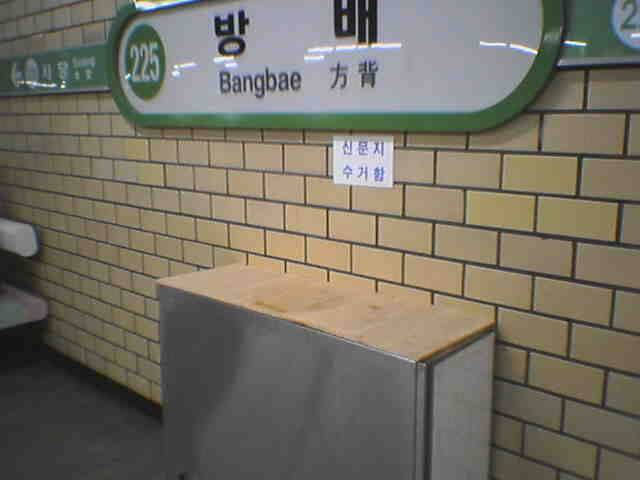
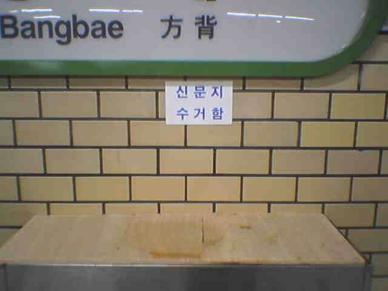

2004-09-01 10:33:35 서울 지하철 휴지통 개방. 그 이후. 테러에 대한 대비책으로 시행된 서울 지하철 휴지통 폐쇄.그 길지 않은 삽질의 여정이 시행 4개월여만인 어제 끝났다.어떻게 달라졌을까?'신문지 수거함' 이라고 바뀐 채 여전히 입구는 막혀 있다.그들의 꽉 막힌 마음처럼.관련 게시물 : http://blog.empas.com/lisyoen/3347843